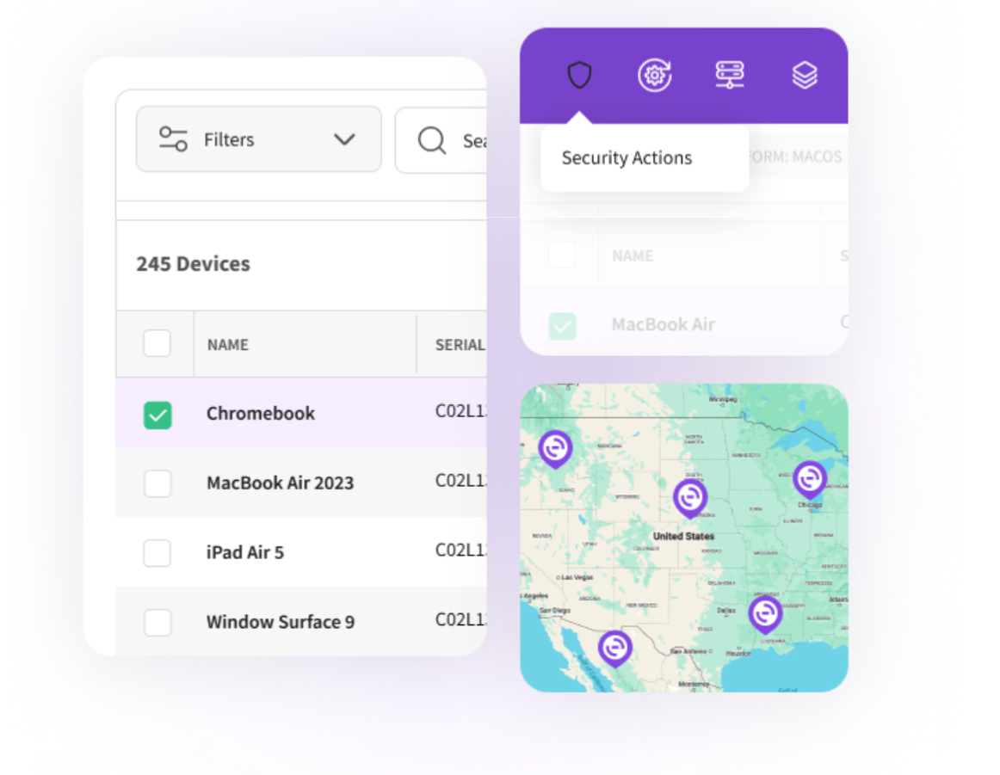
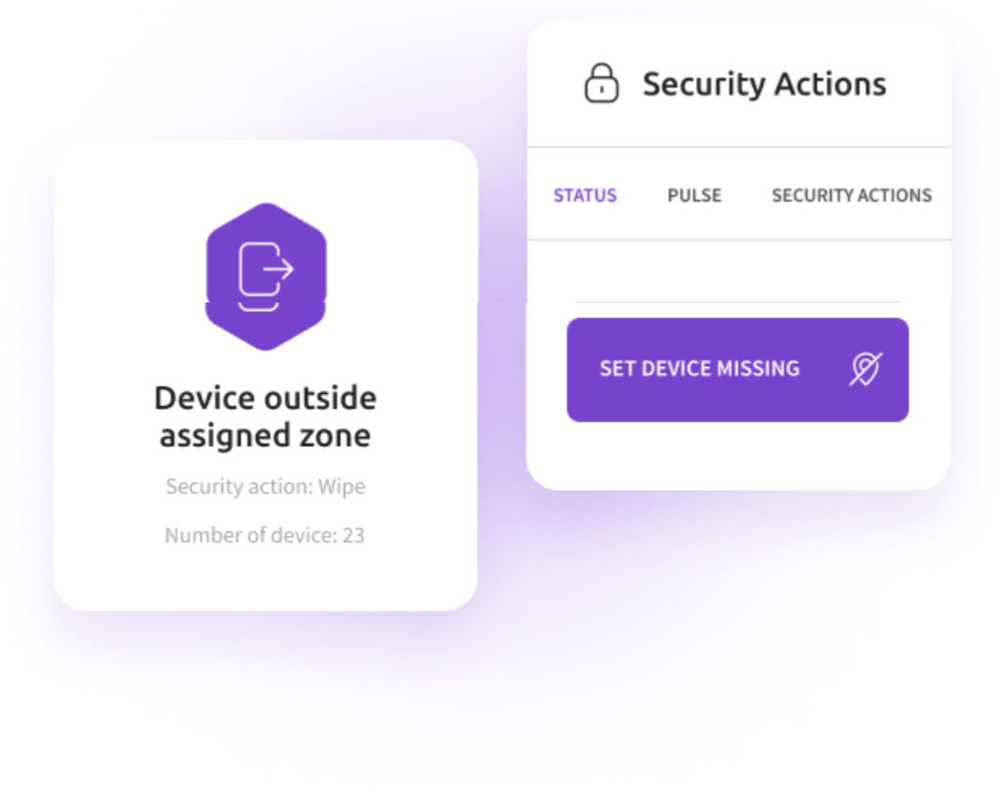
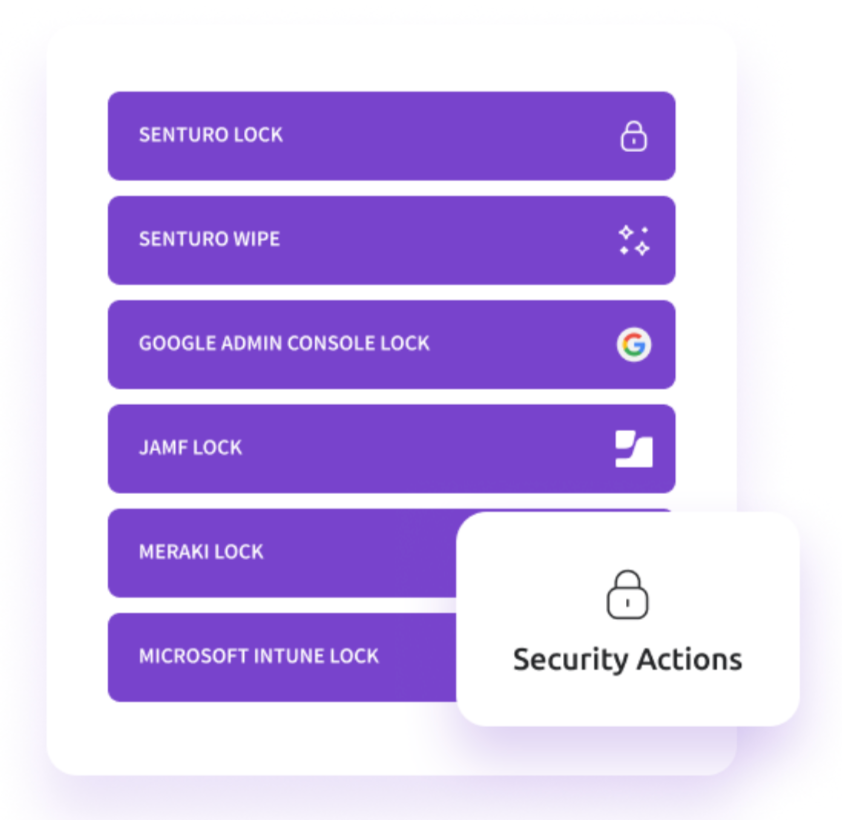
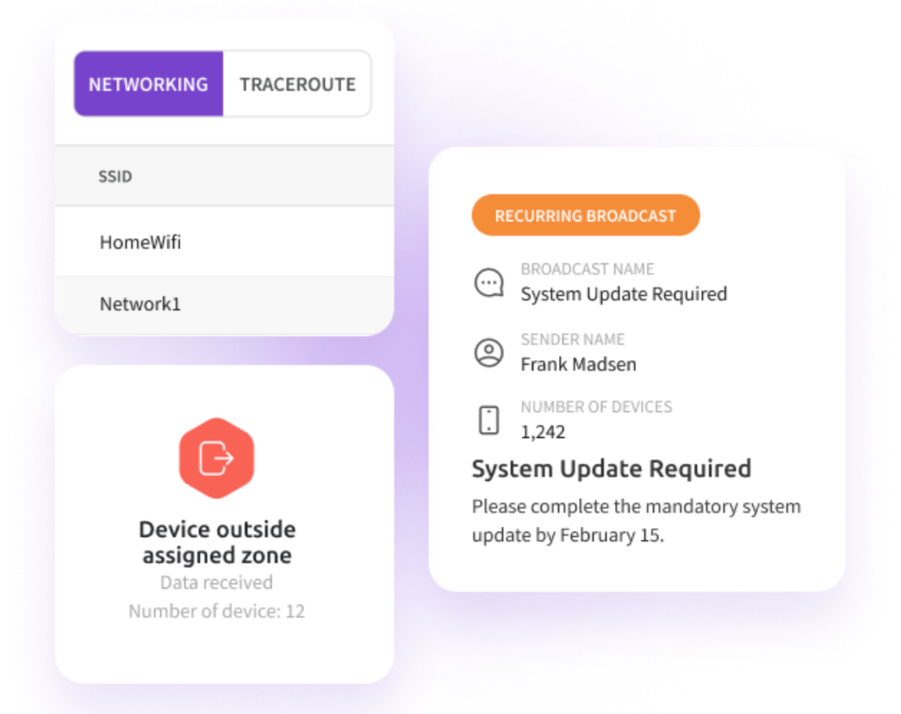
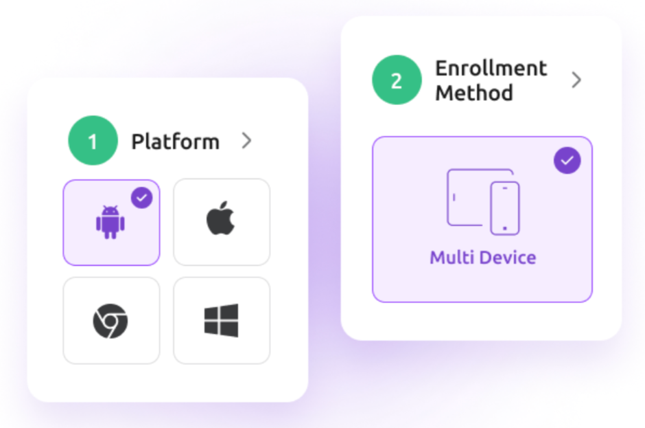

K-12 EDUCATION
Never lose sight of your district's mobile devices again
Lost devices disrupt learning, drain budgets, and create unnecessary headaches. With Senturo, you can locate and secure every device instantly, protecting your district’s resources and your peace of mind.
Built with a K-12 IT admin’s needs in mind, Senturo delivers precise, real-time geo-visibility of every device in your fleet, displayed directly on Google Maps. Whether you’re managing hundreds or tens of thousands of devices, Senturo simplifies inventory management, reduces recovery times, and safeguards your budget.
Book a Demo
"Senturo is super easy to use, very accurate and essentially pays for itself in recovered devices alone. An essential purchase to optimize your IT fleet visibility as well as get your device attrition and recovery rates in order."
Samuel Hoch, Director of Technology, Catoosa Public Schools
Protecting Devices Across 1,600+ schools
in 30 US States and 8 Countries

STREAMLINED MANAGEMENT
Organize & Monitor Your Entire Fleet With Ease
Every lost or misplaced device isn’t just an inconvenience—it disrupts learning and strains budgets. Senturo ensures rapid recovery of devices, minimizing downtime and safeguarding educational continuity.

Mobile IT Fleet Management
Always Know Where Your Devices Are
Senturo gives you complete visibility of your school devices, wherever they are. View your entire fleet on Google Maps in real time, or drill down to individual devices. Need a location history? No problem. Get a clear audit trail in just a couple of taps.
Stay Organized
Organize your devices your way by creating customized groups that support how you work: by campus, school, student group, subject, loaned devices, or anything else. Want more detail? Simply assign tags tailored to your own criteria, and add custom notes to any device.
Streamline and Schedule Returns
Getting "loaners" back for maintenance or re-assignment doesn’t need to be a nightmare. Senturo empowers you to assign return dates, and create automated reminders and instructions that help staff and students return their devices on time. Not sure if a device has been returned? Simply check its location on your dashboard.
Security Monitoring
Identify Devices at Risk at a Glance
Some devices - like those in your class carousel or your loan-for-a-day devices - might be more at risk of wandering off. With Senturo, it’s easy to create customized groups of at-risk devices, and get an overview of their real-time whereabouts from your dashboard in a single view. Geofencing, automated alerts & actions double down on security, too.
Manage Proactively
Don’t wait for problems to find you. Senturo gives you the power to manage proactively, stopping problems before they even think about starting. Run quick check-ins of your device inventory. Get alerts if a device hasn’t checked in within the time limits you set. Demonstrate to your board that you’re doing everything you can to maintain the security of your fleet. When you can track & locate all your devices, you can say goodbye to ambiguity.

Resolve Incidents Fast
Remotely Lock Missing Devices
If you think a device has been stolen, simply switch it to ‘missing’ to block unauthorized access with remote lock and remote wipe functionality. You also have the option of taking screenshots to aid recoverability, too.
Accurate Location Tracking
Manage missing devices tactfully. Students lose things, but that’s ok. When a student has mislaid their device, it’s simple to track it down with pinpoint accuracy. This can also help with absence management or missing students, too.
One-Way Broadcasts to All Devices
Make school life easier with one-way messaging. Send critical school alerts for district outages, school closures and fire drills. Remind students to take cyber security actions, or to charge and re-start their devices, ready for state testing. Customize your messages and schedule them for whenever you like.


TROUBLESHOOTING
Automate School Policies
Set Up Geofencing & Alerts
Keep K-12 computers where they should be: in class, in school, in your district. Simply set the territory (from meters to thousands of miles!) and you’ll get alerts when a device leaves its designated zone, and when it returns. This tightens security and is also useful for managing transient students with ease, too.
Keep Kids Off Hotspots & VPNs
School devices stay firmly on school-approved networks. If a device tries to connect to unauthorized VPNs, personal smartphone hotspots, and insecure networks, you’ll be notified immediately.
Set Up Senturo Easily, and Integrate With Your Existing Tech Stack
Fast, Easy Enrollment
Whether you have ten or a thousand devices, enrolling devices is easy. Deploy Senturo quickly with your choice of MDM from a single dashboard, or download it as a standalone app. And don’t forget your Senturo team is always just a call or email away, to help you get started.
Cross-Platform Support
Senturo keeps all your entire fleet visible and safe - whatever it’s made of. It works seamlessly with Android, iOS, macOS and Windows, giving you cross-platform reliability and the freedom to teach with any tech.

Enhances MDM
Senturo is designed to complement mobile device management, whether you use Google Admin Console, Jamf or something else. It works with, not against, your MDM, enhancing functionality and supporting its capabilities. Simply plug in Senturo and off you go. No MDM? No problem. Senturo is a standalone app so you don’t need MDM to use it.
Delegate IT Security
Responsible for a whole district’s fleet of devices? Why not share the load and delegate security tasks, such as remote lock and wipe, to individual schools? User flexibility and different levels of access permission give you the option to share the responsibility and speed up the response to alerts.
“
“Senturo has been a great resource for extremely accurate tracking of our assets.”
Pleasant Grove ISD